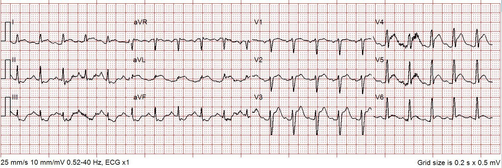
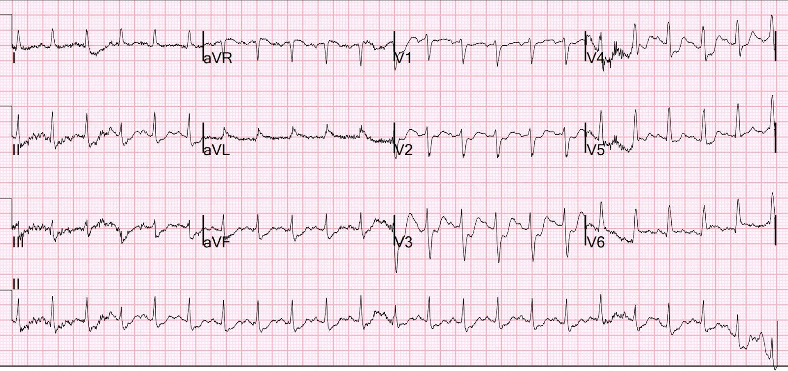
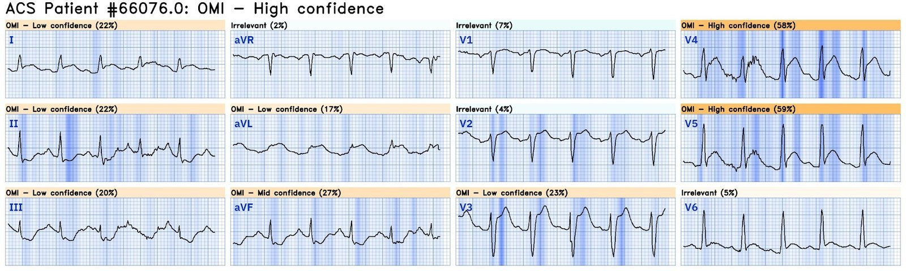
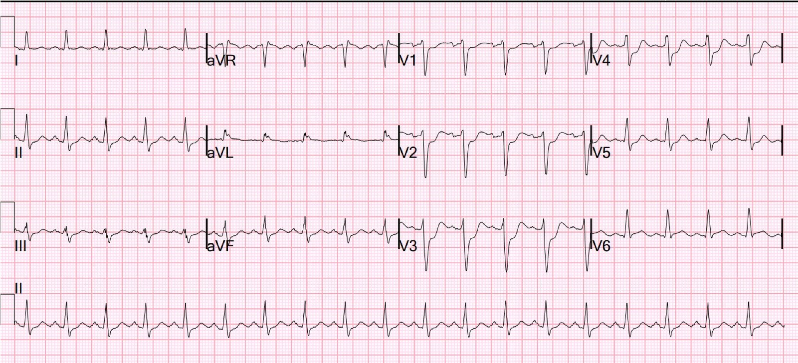
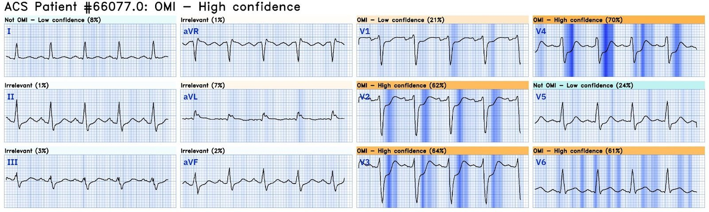
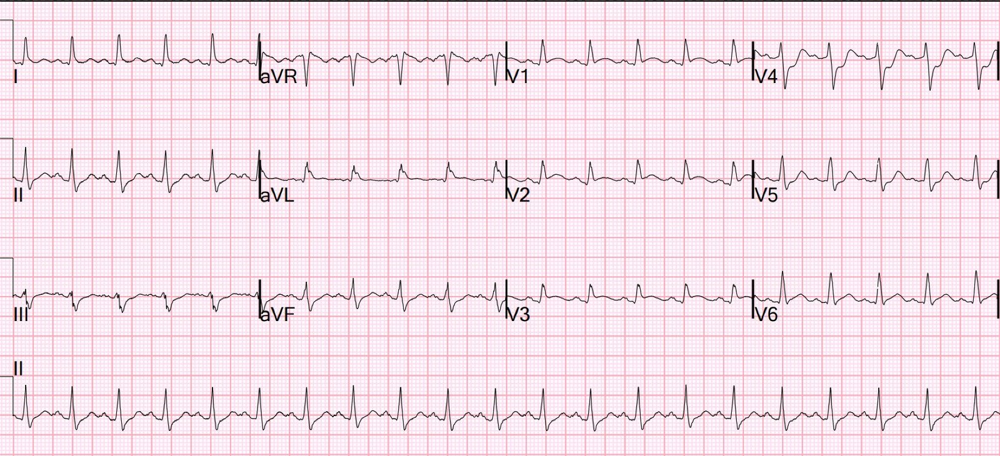

29/09/2024 — Bệnh nhân 50 tuổi rung thất được tái lập tuần hoàn tự nhiên (ROSC), sau đó có 2 điện tâm đồ liên tiếp này: động mạch nào là động mạch nhồi máu?
Bản dịch tiếng Việt của bài "50 yo with V fib has ROSC, then these 2 successive ECGs: what is the infarct artery?" – Dr. Smith’s ECG Blog. Giữ nguyên toàn bộ 7 hình ảnh của bản gốc.
Một bệnh nhân 50 tuổi được hồi sức thành công sau rung thất (ventricular fibrillation).
Bệnh nhân được ghi một điện tâm đồ trước viện sau khi tái lập tuần hoàn tự nhiên (ROSC):


Bạn nghĩ gì?
Bản ghi này chắc chắn trông giống STEMI thành trước (tắc LAD đoạn gần), với ST chênh lên (STE) và sóng T tối cấp (HATW) ở V2-V6 cùng I và aVL. Mặc dù người ta có thể gặp đủ loại dấu hiệu thiếu máu cục bộ do hậu quả của ngừng tim (chứ không phải là nguyên nhân gây ngừng tim), mức độ ST chênh lên và HATW như thế này gần như chẩn đoán xác định tắc cấp LAD đoạn gần.
Điều này dẫn đến kích hoạt phòng thông tim (cath lab).
Khi đến khoa cấp cứu (ED), điện tâm đồ này được ghi:


Bạn nghĩ gì?
Có ST chênh xuống sâu, rõ nhất ở V1-V4. Hình ảnh này thường biểu hiện OMI thành sau, nhưng khi có nhịp nhanh và nhất là sau ngừng tim, đây có thể chỉ là thiếu máu cục bộ do tăng nhu cầu, tức thiếu máu cục bộ dưới nội tâm mạc còn sót lại do tình trạng lưu lượng thấp trong lúc ngừng tim. Nhưng nếu không thấy điện tâm đồ trước viện đầu tiên kia, tôi sẽ gọi bản ghi này là: “OMI thành sau cho đến khi chứng minh được điều ngược lại.”
Dĩ nhiên Queen of Hearts cũng nhận ra OMI:


Bấm vào đây để đăng ký quyền truy cập Queen of Hearts
Một điện tâm đồ khác được ghi 13 phút sau đó, khi đã tái lập tuần hoàn tự nhiên được một lúc và dấu hiệu sinh tồn ổn định hơn:


Tần số tim đã giảm xuống 114 nhịp/phút
Bạn nghĩ gì?
Bản ghi này chẩn đoán xác định OMI thành sau.
Dĩ nhiên Queen of Hearts cũng nhận ra OMI trên bản ghi này:


Bấm vào đây để đăng ký quyền truy cập Queen of Hearts
Các chuyển đạo phía sau đã được ghi. Điều bất thường là các chuyển đạo được dời ra phía lưng, làm V7-V8, lại là V1-3 (thông thường người ta đặt V4-6 ra phía lưng)


V1-V3 (thực chất là V7-V9) cho thấy điện thế thấp điển hình của QRS phía sau, kèm ST chênh lên.
V4-5 vẫn tiếp tục cho thấy ST chênh xuống (STD).
V6, vẫn ở vị trí V6, nằm gần thành sau và tiếp tục cho thấy ST chênh lên nhẹ kèm sóng T tối cấp.
Điều này loại trừ thiếu máu cục bộ dưới nội tâm mạc và chẩn đoán xác định OMI thành sau.
Bạn giải thích thế nào về việc OMI STEMI dương tính (STEMI(+) OMI) thành trước ngay sau ROSC lại tiến triển thành OMI thành sau 30 phút sau đó?
Kết quả chụp mạch vành giải thích điều đó:
Thủ phạm gây ngừng tim ngoài bệnh viện (OOHCA)/rung thất (VF) là tắc cấp động mạch mũ đoạn giữa. Tình cờ ghi nhận bệnh nhân có tắc mạn tính LAD đoạn giữa với tuần hoàn bàng hệ phải > trái (R > L) phát triển mạnh.
Nói cách khác, vùng cấp máu của LAD được RCA nuôi.
Thân chung động mạch vành trái (LMCA):
Thân chung trái là mạch có khẩu kính lớn
LCx: động mạch mũ là mạch có khẩu kính trung bình-lớn, bị tắc ở đoạn giữa trên lần chụp mạch đầu tiên. Dòng chảy TIMI-0.
Trên lần chụp mạch theo dõi, thấy một nhánh bờ tù OM1 lớn và một nhánh Cx rãnh nhĩ thất/nhánh sau bên trái (LPL) nhỏ
hiện ra khi mạch được tái thông
LAD có hẹp lan tỏa 50% ở đoạn gần và bị
tắc ngay sau một nhánh chéo D1 nhỏ
RCA là mạch có khẩu kính trung bình-lớn, cấp máu cho một nhánh rPDA cỡ trung bình, một nhánh rPLA1 cỡ trung bình và ba nhánh rPLA nhỏ.
Có tuần hoàn bàng hệ qua vách phải > trái (R > L) phát triển tốt, làm đầy phần lớn LAD đoạn giữa và đoạn xa
Giải thích:
Tắc cấp động mạch mũ đã gây ngừng tim. Ngừng tim gây tụt huyết áp cực độ khiến RCA không thể tiếp tục cấp máu cho LAD ở xa. Điều này gây ra STEMI thành trước típ 2.
Nói cách khác, với tắc hoàn toàn mạn tính (CTO) LAD và tuần hoàn bàng hệ từ RCA, các tuần hoàn bàng hệ này không đủ để cấp máu cho vùng phân bố của LAD trong lúc bệnh nhân ngừng tim.
Troponin I đỉnh > 60.000 ng/L
Siêu âm tim chính thức
Kích thước buồng thất trái bình thường, thành tim dày nhẹ, chức năng tâm thu thất trái giảm vừa đến nặng. Phân suất tống máu thất trái ước tính là 29%.
—Rối loạn vận động thành khu trú – toàn bộ mỏm loạn động, vách trước đoạn giữa và thành trước đoạn giữa vô động.
—Rối loạn vận động thành khu trú – vô động thành trước bên.
—Rối loạn vận động thành khu trú – thành dưới bên đoạn giữa và đoạn xa
vô động.
Nói cách khác: 1) nhồi máu vùng LAD (phần lớn có thể là cũ) và 2) nhồi máu dưới-sau-bên.

===================================
BÌNH LUẬN CỦA TÔI, bởi KEN GRAUER, MD (29/9/2024):
===================================
Tôi thấy ca hôm nay sâu sắc vì một số lý do.
- Ca hôm nay nhắc chúng ta về logic trực giác rằng nếu một bệnh nhân ngừng tim với nhịp sốc được (tức là rung thất (VFib)) — và sau khi khử rung thành công cho thấy bằng chứng OMI cấp (ngay cả khi không nhất thiết thỏa tiêu chuẩn STEMI) — thì những bệnh nhân như vậy được lợi rất nhiều từ thông tim ngay kèm PCI. (Xem phần Bàn luận trong bài ngày 29 tháng Sáu năm 2024 của Dr. Smith’ ECG Blog).
- Mặc dù việc dự đoán động mạch “thủ phạm” của tắc mạch vành cấp thường đơn giản (tức là dựa vào sự phân bố của các chuyển đạo có ST chênh lên và các chuyển đạo có ST chênh xuống soi gương) — điều này không phải lúc nào cũng vậy.
- DANH SÁCH các lý do khiến việc dự đoán động mạch “thủ phạm” có thể không đơn giản bao gồm: i) Biến thể giải phẫu; ii) Bệnh nhiều nhánh mạch vành; iii) Kiểu tuần hoàn bàng hệ bất thường (thường đi kèm với bệnh nhiều nhánh mạch vành); và, iv) Chẩn đoán có thể sai (tức là bệnh nhân có thể bị bệnh cơ tim Takotsubo — SCAD [bóc tách động mạch vành tự phát] — co thắt mạch vành — thuyên tắc phổi cấp — hoặc một bệnh khác).
- Liên hệ với CA BỆNH hôm nay: Như Dr. Smith nói — Việc cố dự đoán động mạch “thủ phạm” trong ca hôm nay thật khó hiểu. Sự phân bố ST-T chênh lên và chênh xuống thay đổi mạnh mẽ ban đầu gợi ý một mạch “thủ phạm” — rồi ngay sau đó lại gợi ý một mạch khác. Biết được từ kết quả thông tim rằng 2 trong số các lý do trong DANH SÁCH ở trên của tôi [bệnh nhiều nhánh mạch vành và kiểu tuần hoàn bàng hệ bất thường] giải thích cho khó khăn này — giúp chúng ta hiểu các dấu hiệu điện tâm đồ trên bản ghi hôm nay.
Điểm MẤU CHỐT: Dự đoán động mạch “thủ phạm” không chỉ là một bài tập học thuật:
- Tôi tin rằng cố gắng dự đoán động mạch thủ phạm cải thiện khả năng đọc điện tâm đồ của chúng ta — vì nó buộc chúng ta đối chiếu các dấu hiệu điện tâm đồ ở cả 12 chuyển đạo với bối cảnh lâm sàng. Ví dụ, một khi đã nhận ra được (các) điện tâm đồ trước mắt có hay không gợi ý rõ một động mạch “thủ phạm” cụ thể — chúng ta biết liệu có cần cân nhắc một trong 4 lý do tôi nêu trong DANH SÁCH ở trên hay không.
Lợi ích quan trọng khác có được từ việc thường quy cố gắng dự đoán động mạch “thủ phạm” — là làm như vậy có thể giúp ích cho chúng ta về mặt lâm sàng. Ví dụ:
- Bài ngày 9 tháng Chín năm 2024 của Dr. Frick minh họa việc cố dự đoán động mạch “thủ phạm” đã giúp bác sĩ can thiệp như thế nào — vì biết rằng điện tâm đồ ban đầu gợi ý mạnh “Xoáy” trước tim (Precordial Swirl) (do đó chẩn đoán OMI LAD đoạn gần) — có nghĩa là dù trên thông tim LAD chỉ hẹp lòng mạch rất ít, vẫn cần IVUS (siêu âm trong lòng mạch – IntraVascular UltraSound) để chẩn đoán xác định (và IVUS đã xác nhận vị trí thủ phạm được gợi ý từ điện tâm đồ ban đầu).
- Bài ngày 8 tháng Tư năm 2022 của Dr. Fetterolf và Dr. Meyers minh họa việc nhận ra dấu hiệu “Cờ Nam Phi” (South African Flag Sign), trong đó chỉ có ST chênh lên ở 1 chuyển đạo trước ngực ( = chuyển đạo V2) — gợi ý mạnh rằng dù không thỏa tiêu chuẩn STEMI (vốn đòi hỏi ST chênh lên đủ mức ở 2 chuyển đạo liên tiếp) — gần như chắc chắn có OMI do tắc cấp nhánh chéo thứ 1 hoặc thứ 2 của LAD.
- Bài ngày 23 tháng Chín năm 2024 của Dr. Frick cho thấy RBBB kèm ST chênh lên ở chuyển đạo V1 và V2, dễ gợi ý hoặc tắc LAD đoạn gần, hoặc OMI RCA đoạn gần kèm tổn thương thất phải cấp. Nhưng vì đánh giá của Dr. Frick về 10 chuyển đạo còn lại trên bản ghi này không phù hợp với OMI do tắc cấp bất kỳ động mạch vành cụ thể nào — một chẩn đoán thay thế đã được cân nhắc. Việc nhận ra kịp thời PE cấp có lẽ đã không xảy ra nếu bác sĩ lâm sàng không theo đuổi đến cùng quá trình tư duy tìm kiếm một động mạch “thủ phạm” cụ thể.
Tóm lại:
Chúng ta học được từ việc cố dự đoán động mạch “thủ phạm”. Hiểu biết của chúng ta về mối tương tác giữa triệu chứng và thay đổi trên các điện tâm đồ liên tiếp được nâng cao — nhất là trong những ca như ca hôm nay, khi kết quả chụp mạch vành giải thích một loạt dấu hiệu mà nếu không thì rất khó hiểu.
- Đặc biệt quan trọng với nhân viên y tế cấp cứu — việc chúng ta trình bày ca bệnh với một bác sĩ can thiệp còn nghi ngờ sẽ thuyết phục hơn, khi dù ca bệnh bị gạt đi là “NSTEMI” — chúng ta vẫn dự đoán được kết quả thông tim (khi cuối cùng cũng được làm) sẽ cho thấy gì.